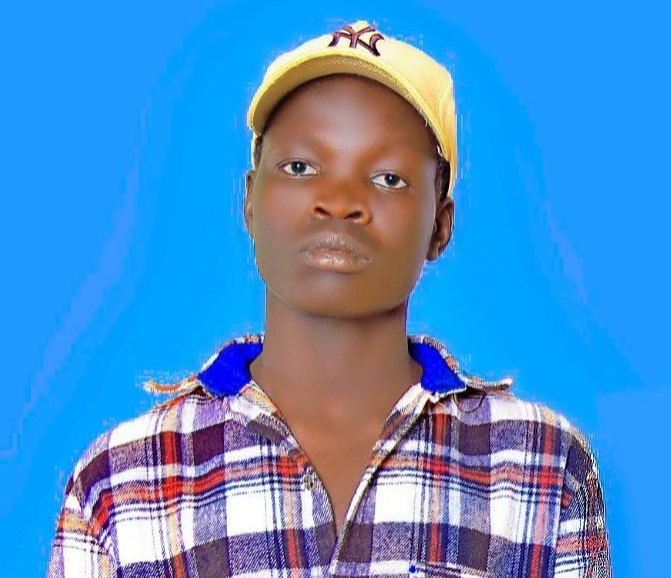

A passionate Front-end developer, a Back-end rookie and a programmer with a strong focus on creating engaging and user-friendly web experiences based in Ethiopia.
Welcome to my professional homepage/webpage
My name is Thep Nyuon Thep, also known as Thep Williams. I am a passionate computer science student with a strong focus on creating engaging and user-friendly web experiences, with growing experience in coding. The best hobby i got is programming. I'm currently puruing my bachelor's degree(computer science degree) at Gambella University in ethiopia. I collaborate with tech enthusiasts to create innovative solutions to real-world problems.